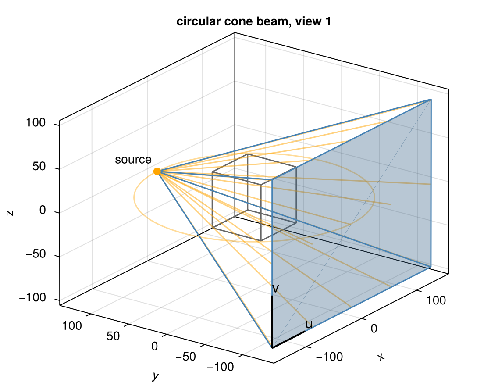
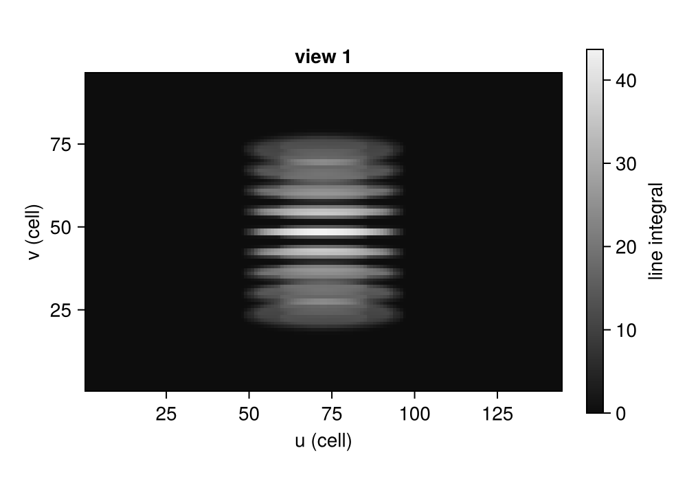
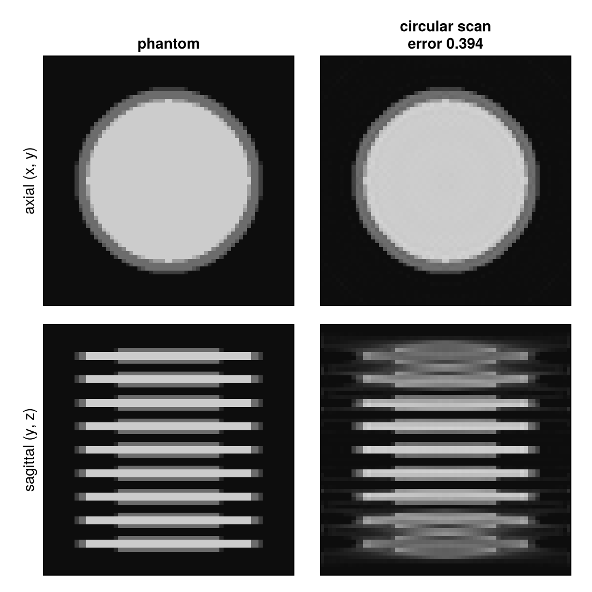
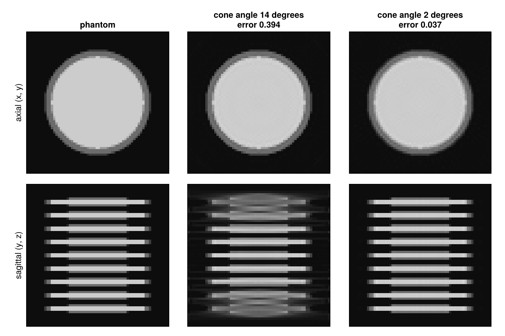

Circular cone-beam CT
Cone-beam CT (CBCT) measures a whole volume at once: a point source sends a cone of rays through the object to a flat detector, and source and detector turn once around the object. This tutorial simulates a circular scan of a stack of discs and shows what a circular orbit cannot measure: the reconstruction degrades away from the plane of the orbit, the more the larger the cone angle.
using CTOperators, ImagePhantoms, RegularizedLeastSquares, CairoMakie
using ImageGeoms: axisdepth_figure (generic function with 1 method)The object
A volume of 64³ voxels of 1 mm. The object is a stack of nine thin discs, 3 mm thick and 6 mm apart, of radius 24 mm (a Defrise phantom). Its edges are planes parallel to the orbit, the structures a circular scan sees worst.
n = 64
image = ImageGeom(; dims=(n, n, n), deltas=(1.0, 1.0, 1.0))
discs = [ellipsoid((0, 0, z), (24, 24, 1.5), (0, 0, 0), 1.0) for z in -24:6:24]
x_true = Float32.(phantom(axis(image, 1), axis(image, 2), axis(image, 3), discs, 2));The scan
The source runs on a circle of radius 128 mm in the plane z = 0, the flat detector of 144 × 96 cells of 2 mm is 256 mm from the source; 180 views over one turn. At the rotation axis the magnification is 2, so a detector cell covers 1 mm, one voxel. The top and bottom discs are seen under an angle of up to about 14 degrees from the plane of the orbit.
circle = circular_cone_beam(; angles=range(0, 2pi, 181)[1:180], dso=128, dsd=256, nu=144, nv=96, du=2.0)ConeBeam{Float64}: 180 views, detector of 144 x 96 cells, stored in ArrayOne view: the source (orange) sends a cone (blue edges, some rays orange) through the volume to the detector; the orange circle is the path of the source.

The data
Each view is a detector image. The discs appear as bands, sharp in the middle row, where the rays run parallel to them, and smeared above and below, where the rays cross them at an angle.
op = JosephProjector(image, circle)
y = op * x_true
Reconstruction
20 CGNR iterations. The axial slice through the middle disc and the sagittal slice through the axis (the z axis points up):
x_circle = reshape(solve!(createLinearSolver(CGNR, op; iterations=20), vec(y)), n, n, n);
The middle disc is reconstructed well. Away from the middle the discs lose their edges and blur into each other along z, although every voxel was in every view. The reason is what a circular orbit measures: the data determines the object only in the plane of the orbit. Above and below, no ray runs parallel to the discs, and an iterative method cannot recover what no measurement contains (Tuy's condition: every plane that cuts the object has to meet the path of the source; the planes of the discs above and below the orbit never do).
A smaller cone angle
The missing data grows with the cone angle. The same circular scan with the source eight times farther away (1024 mm, the detector at 2048 mm) sees the discs at less than 2 degrees:
far = circular_cone_beam(; angles=range(0, 2pi, 181)[1:180], dso=1024, dsd=2048, nu=144, nv=96, du=2.0)
op_far = JosephProjector(image, far)
x_far = reshape(solve!(createLinearSolver(CGNR, op_far; iterations=20), vec(op_far * x_true)), n, n, n);
With nearly parallel rays every slice is measured almost as in a fan-beam scan, and the discs come back. Scanners with a large cone instead move the source along z as well: Helical cone-beam CT continues with the same phantom.
This page was generated using Literate.jl.